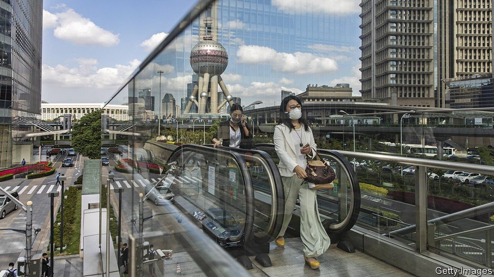

2021-07-06T15:33:16+00:00
Brace, brace
准备抵御冲击
準備抵禦衝擊
Three corporate giants are posing a stiff test for Chinese banks
三大企业巨头对中国银行业构成严峻考验
三大企業巨頭對中國銀行業構成嚴峻考驗
The country’s big lenders dare to be dull
该国的大型银行无惧变得单调死板
該國的大型銀行無懼變得單調死板

NOT LONG ago the conventional wisdom was that China would do whatever it took to save its biggest companies from failing. Times have changed. Three corporate giants—Evergrande, the country’s biggest property developer; Huarong, its biggest investor in bad bank assets; and Suning, a retail giant—are all suffering from financial distress.
不久前人们还普遍认为中国会不惜一切挽救它最大的企业，不让它们倒下。此一时，彼一时。中国最大的房地产开发商恒大、最大的银行不良资产投资者华融、零售巨头苏宁这三家巨头企业目前都深陷财务困境。
不久前人們還普遍認為中國會不惜一切挽救它最大的企業，不讓它們倒下。此一時，彼一時。中國最大的房地產開發商恆大、最大的銀行不良資產投資者華融、零售巨頭蘇寧這三家巨頭企業目前都深陷財務困境。
The three firms’ long rush to expand has collided with slower growth, tighter credit and stricter regulatory scrutiny. Their bonds are trading at discounts of roughly 25% to face value, showing that investors have priced in a significant chance that they will default.
这三家公司长期以来极力扩张，但遭遇了增长放缓、信贷收紧和更严格的监管审查。它们的债券以相当于面值约25%的折扣交易，这表明投资者已经预期它们违约的可能性很大。
這三家公司長期以來極力擴張，但遭遇了增長放緩、信貸收緊和更嚴格的監管審查。它們的債券以相當於面值約25%的折扣交易，這表明投資者已經預期它們違約的可能性很大。
People in the financial industry are debating whether the government really will let them fail. An analyst with a large asset manager that holds Huarong bonds says his firm believes the state will eventually rescue the “bad bank”, given how integral it is to cleaning up non-performing loans in the financial system. A former adviser to the central bank says that Evergrande and Suning may be more expendable, posing fewer systemic dangers.
金融业人士正在争论政府是否真的会任由它们倒下。某家持有华融债券的大型资产管理公司的一名分析师说，他所在的公司相信国家最终会挽救华融这家“坏账银行”，毕竟它在清理金融系统中的不良贷款方面不可或缺。一位前央行顾问表示，恒大和苏宁或许是更可舍弃的，因为它们构成的系统性风险更小。
金融業人士正在爭論政府是否真的會任由它們倒下。某家持有華融債券的大型資產管理公司的一名分析師說，他所在的公司相信國家最終會挽救華融這家“壞賬銀行”，畢竟它在清理金融系統中的不良貸款方面不可或缺。一位前央行顧問表示，恆大和蘇寧或許是更可捨棄的，因為它們構成的系統性風險更小。
In the first instance, the troubles of these firms are a reflection of their own mismanagement. Evergrande has more debt than any other listed Chinese company. Huarong had a chairman who was executed for bribery. Suning sprayed cash around with abandon, buying trophy assets such as Inter Milan, the football club.
首先来说，这些公司的麻烦反映了它们自身管理不善。恒大的债务比哪家中国上市公司都要多。华融的一名董事长因受贿被执行死刑。苏宁肆意挥霍现金，购买足球俱乐部国际米兰等华而不实的资产。
首先來說，這些公司的麻煩反映了它們自身管理不善。恆大的債務比哪家中國上市公司都要多。華融的一名董事長因受賄被執行死刑。蘇寧肆意揮霍現金，購買足球俱樂部國際米蘭等華而不實的資產。
But the government’s willingness to let them go to the brink also points to something else: its confidence that the banking sector is now solid enough to cope with a big bout of turbulence. That was not always the case. In 2015 Chinese banks were struck by a near-crisis when more than $1trn in cash rushed out of the country and corporate defaults rose. Several banks eventually needed bail-outs.
但是，政府愿意任由它们走向崩溃边缘也说明了另一件事：它相信银行部门现在已经足够稳固，可以应对一场大的动荡。情况并非一向如此。2015年，逾一万亿美元现金流出中国，企业违约率上升，中国银行业由此遭遇了一场近乎危机的冲击。最终有几家银行需要纾困。
但是，政府願意任由它們走向崩潰邊緣也說明了另一件事：它相信銀行部門現在已經足夠穩固，可以應對一場大的動蕩。情況並非一向如此。2015年，逾一萬億美元現金流出中國，企業違約率上升，中國銀行業由此遭遇了一場近乎危機的衝擊。最終有幾家銀行需要紓困。
Many investors still see them as being in a weakened position. With few exceptions, Chinese banks listed on the Hong Kong stock exchange trade far below their reported asset values, implying a high degree of pessimism about their prospects. The root problem is their ultra-rapid credit issuance of the past 15 years, when their loan books grew ninefold, nearly twice as fast as the overall economy.
许多投资者仍然认为它们元气大伤。除了极少数个例以外，在香港交易所上市的中资银行的交易远低于其公布的资产价值，这意味着投资者对它们的前景高度悲观。根本问题是它们在过去15年里超高速发放信贷，期间贷款账目增长了九倍，几乎是整体经济增速的两倍。
許多投資者仍然認為它們元氣大傷。除了極少數個例以外，在香港交易所上市的中資銀行的交易遠低於其公布的資產價值，這意味着投資者對它們的前景高度悲觀。根本問題是它們在過去15年里超高速發放信貸，期間貸款賬目增長了九倍，幾乎是整體經濟增速的兩倍。
Yet any fair assessment of China’s banks must grapple with changes that have made them safer. Regulators have unwound some of their off-balance-sheet chicanery, exemplified by a curtailment of their loans to other financial firms. Such loans, which make it hard to know where risk resides, had soared to 78% of GDP by the end of 2016. Today they are down to about 54%.
然而，要对中国银行业做出公正的评估，就必须设法了解那些已经让它们变得更安全的变化。监管机构已经破除了它们的一些表外欺诈行为，比如限制它们对其他金融公司放贷。这种贷款让人很难知道哪里暗藏风险，截至2016年底此类贷款已飙升至GDP的78%。如今这一比例已降至54%左右。
然而，要對中國銀行業做出公正的評估，就必須設法了解那些已經讓它們變得更安全的變化。監管機構已經破除了它們的一些表外欺詐行為，比如限制它們對其他金融公司放貸。這種貸款讓人很難知道哪裡暗藏風險，截至2016年底此類貸款已飆升至GDP的78%。如今這一比例已降至54%左右。
Banks are also better prepared for bumps ahead. They had capital buffers equivalent to 14.7% of their assets at the end of 2020, a record high. Even as bad loans climbed to nearly 2% last year, the highest in more than a decade, banks made enough cash provisions to cover a near-doubling. The government also now requires the biggest banks to prepare resolution plans in case of trouble.
银行也做了更妥善的准备以应对前方颠簸。到2020年底，它们的资本缓冲水平相当于其资产的14.7%，创历史新高。尽管去年不良贷款率攀升至近2%，为10多年来的最高水平，但银行的准备金足够覆盖增加近一倍的不良贷款。政府现在还要求那些最大的银行预备好解决方案，以防出现问题。
銀行也做了更妥善的準備以應對前方顛簸。到2020年底，它們的資本緩衝水平相當於其資產的14.7%，創歷史新高。儘管去年不良貸款率攀升至近2%，為10多年來的最高水平，但銀行的準備金足夠覆蓋增加近一倍的不良貸款。政府現在還要求那些最大的銀行預備好解決方案，以防出現問題。
These changes bring China more in line with global regulatory standards, albeit with a twist. In most countries the overriding goal is to avoid having to get the state to save reckless banks. In China, however, the state already owns majority stakes in most large banks.
这些变化让中国变得更加符合全球监管标准，尽管还是有一处不同。在大多数国家，压倒一切的目标是避免让政府出手拯救鲁莽行事的银行。然而在中国，政府已拥有大多数大型银行的多数股权。
這些變化讓中國變得更加符合全球監管標準，儘管還是有一處不同。在大多數國家，壓倒一切的目標是避免讓政府出手拯救魯莽行事的銀行。然而在中國，政府已擁有大多數大型銀行的多數股權。
“The question is, do you wipe out equity which is already public money and then put in fresh taxpayer money? Or do you avoid wiping out equity to begin with?” says Nicholas Zhu of Moody’s, a credit-rating agency. Regulators are, he says, taking a mixed approach, likely to support lower-yielding senior debt but not junior debt such as perpetual bonds.
“问题是，你是要把本来就已是公共资金的股权一笔勾销，然后再投入新的纳税人的钱，还是说你一开始就避免抹除股权？”信用评级机构穆迪的诸蜀宁说。他表示，监管机构正在采取一种混合的方式，很可能会支持收益率较低的优先债务，但不会支持永久债券之类的次级债务。
“問題是，你是要把本來就已是公共資金的股權一筆勾銷，然後再投入新的納稅人的錢，還是說你一開始就避免抹除股權？”信用評級機構穆迪的諸蜀寧說。他表示，監管機構正在採取一種混合的方式，很可能會支持收益率較低的優先債務，但不會支持永久債券之類的次級債務。
The weakest banks in China are almost entirely its smallest ones. They generally have dodgier assets, less-professional management and thinner capital cushions. Rather than dealing with them one by one, regulators are working to bind them together. Mergers are under way in the provinces of Liaoning, Shanxi and Sichuan. “Consolidation is something we expect. It allows for higher requirements for corporate governance and risk control,” says Vivian Xue of Fitch, another credit-rating agency.
中国最弱的银行几乎全都是那些最小的银行。它们通常资产更不可靠、管理更不专业、资本缓冲更薄弱。监管机构没有选择逐一处理它们，而是在努力将它们捆绑在一起。辽宁、山西和四川的小银行正在合并。“我们乐于看到整合。这样就可以对公司治理和风险控制提出更高的要求。”另一家信用评级机构惠誉（Fitch）的薛慧如表示。
中國最弱的銀行幾乎全都是那些最小的銀行。它們通常資產更不可靠、管理更不專業、資本緩衝更薄弱。監管機構沒有選擇逐一處理它們，而是在努力將它們捆綁在一起。遼寧、山西和四川的小銀行正在合并。“我們樂於看到整合。這樣就可以對公司治理和風險控制提出更高的要求。”另一家信用評級機構惠譽（Fitch）的薛慧如表示。
Perhaps the biggest concern about China’s banks today is not their recklessness but whether regulators are themselves creating new risks with a new set of lending rules. Worried about the property sector, they have told banks to cap their mortgages and other property lending to no more than 35% of their loan books. Meanwhile, regulators ordered banks last year to increase loans to smaller firms by between 30% and 40%.
或许，中国银行业如今最让人担忧的不是它们不顾后果，而是监管机构自己是否在用一套新的贷款规则制造新的风险。出于对房地产行业的担忧，监管机构已经要求银行将抵押贷款和其他房地产贷款的上限控制在不超过其贷款总额的35%。与此同时，监管机构去年指示银行把对小企业的贷款增加30%至40%。
或許，中國銀行業如今最讓人擔憂的不是它們不顧後果，而是監管機構自己是否在用一套新的貸款規則製造新的風險。出於對房地產行業的擔憂，監管機構已經要求銀行將抵押貸款和其他房地產貸款的上限控制在不超過其貸款總額的35%。與此同時，監管機構去年指示銀行把對小企業的貸款增加30%至40%。
“In the past regulators complained that banks all looked alike, and wanted them to serve different client bases,” says May Yan, an analyst with UBS, a bank. “Some of the recent regulations are making banks look the same.” Their income trends are already more similar. Take, for instance, the ten biggest banks in China. Virtually all posted profit growth of about 2% last year, with the least differentiation among their results on record.
“过去，监管机构抱怨银行看起来都一个样，希望它们能为不同的客户群服务，”瑞银（UBS）分析师颜湄之表示，“而近年的一些规定正让银行都变成一个样。”它们的收入趋势就已经变得越发相似了。以中国最大的十家银行为例，去年它们几乎全都公布了约2%的利润增长，是有记录以来利润增长差异最小的一次。
“過去，監管機構抱怨銀行看起來都一個樣，希望它們能為不同的客戶群服務，”瑞銀（UBS）分析師顏湄之表示，“而近年的一些規定正讓銀行都變成一個樣。”它們的收入趨勢就已經變得越發相似了。以中國最大的十家銀行為例，去年它們幾乎全都公布了約2%的利潤增長，是有記錄以來利潤增長差異最小的一次。
This trend suggests that the main risk for Chinese banks is a lack of diversification. Along with having similar lending profiles, their assets are overwhelmingly concentrated within China. Overseas loans now account for just 2% of their lending portfolios. All the loan-loss provisions, capital buffers and improved governance may make them safer. But ultimately the only measure that really matters is the health of the Chinese economy. ■
这一趋势表明，中国银行业的主要风险是不够多元化。除了贷款组合相似，它们的资产绝大多数都集中在中国国内，海外贷款目前只占其贷款组合的2%。贷款损失准备金、资本缓冲和治理改善——种种这些可能会让它们变得更安全，但说到底，唯一真正重要的衡量标准是中国经济的健康状况。
這一趨勢表明，中國銀行業的主要風險是不夠多元化。除了貸款組合相似，它們的資產絕大多數都集中在中國國內，海外貸款目前只佔其貸款組合的2%。貸款損失準備金、資本緩衝和治理改善——種種這些可能會讓它們變得更安全，但說到底，唯一真正重要的衡量標準是中國經濟的健康狀況。